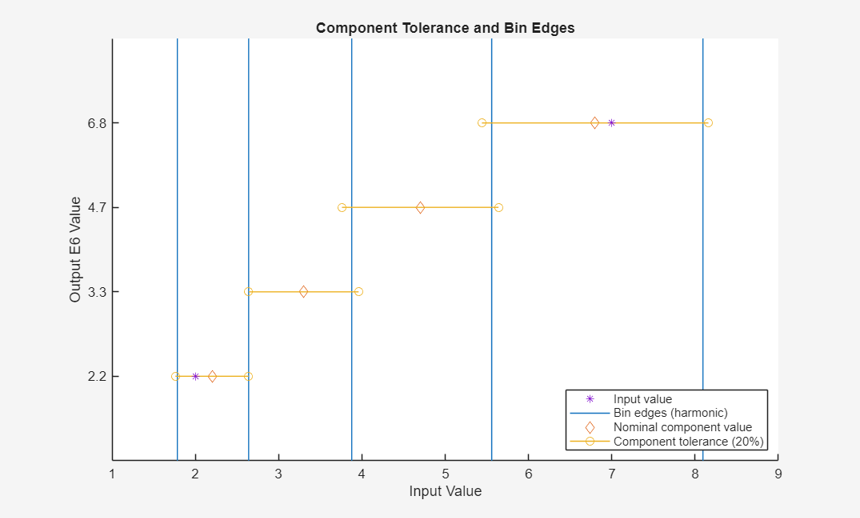

ROUND63 Examples
The function ROUND63 rounds the input numeric values to component values from the IEC 60063 E-series of preferred numbers. By default ROUND63 simulates the boundaries of electronic component tolerances, so that the rounding bin edges approximate the component tolerance limits.
Contents
Basic Usage
ROUND63's first input is a numeric array of values to be rounded, the second input selects the E-series (e.g. 'E24', 'E48', 'E96', etc.):
round63(500,'E6') round63(1:6,'E12')
ans =
470
ans =
1 2.2 3.3 3.9 4.7 5.6
Input 3: Select Rounding Method
The optional third input argument can be used to select the rounding method. Specify this as one of 'harmonic', 'arithmetic', 'up', or 'down' (or their intitials, i.e. 'h', 'a', 'u', or 'd' respectively):
ipt = [5,42,18,100]; round63(ipt,'E6','harmonic') % default round63(ipt,'E6','arithmetic') round63(ipt,'E6','up') round63(ipt,'E6','down')
ans =
4.7 47 22 100
ans =
4.7 47 15 100
ans =
6.8 47 22 100
ans =
4.7 33 15 100
Output 4: Bin Edges
The fourth output is a vector of the bin edges used to allocate the values of X into bins (the section "Component Tolerance and Bin Edges" below explains these values in more detail):
[~,~,~,edg] = round63([1,101],'E3')
edg =
0.63946
1.375
2.9971
6.3946
13.75
29.971
63.946
137.5
Output 3: Preferred Number Series
ROUND63's third output is a vector of contiguous values from the selected E-series, which includes all of the values in Y:
[Y,~,pns] = round63([1,101],'E3')
Y =
1 100
pns =
1
2.2
4.7
10
22
47
100
Output 2: Indices
The second output is an array of indices idx with the same size as X, in general such that the output Y = pns(idx):
[Y,idx,pns] = round63([1,101],'E3')
Z = pns(idx)
Y =
1 100
idx =
1 7
pns =
1
2.2
4.7
10
22
47
100
Z =
1
100
Positive Only
Only positive values are rounded. Zero, infinity, not-a-number, and all negative values are returned as NaN (and ignored when defining the bins):
[Y,idx,pns,edg] = round63([-Inf,Inf,NaN; -1, 0, 1], 'E3')
Y =
NaN NaN NaN
NaN NaN 1
idx =
NaN NaN NaN
NaN NaN 1
pns =
1
edg =
0.63946
1.375
Component Tolerance and Bin Edges
The default bin edges simulate the component tolerance ranges. ROUND63 does this by computing the harmonic mean of adjacent E-Series values. The harmonic mean (vertical lines) of adjacent E-series values approximate the limits of the component tolerance range (horizontal lines & circles) of IEC 60063 component values (diamonds). These means are the bin edges used to round the input values (asterisks) into the component values:
round63_view([2,7],'E6')

Example: Numeric to Metric Prefix with NUM2SIP
An easy way to convert the numeric values to text with metric/SI prefixes (e.g. 1000 -> '1 k') is to use my FEX submission NUM2SIP:
Y = round63(23e5,'E6')
T = num2sip(Y)
Y =
2200000
T =
'2.2 M'